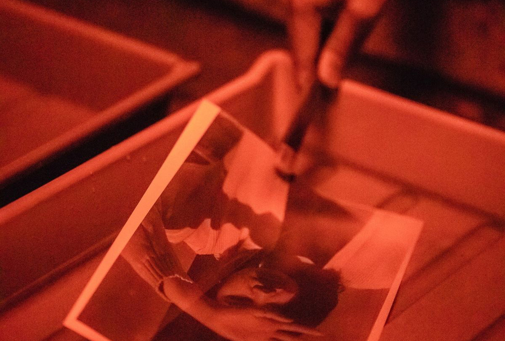
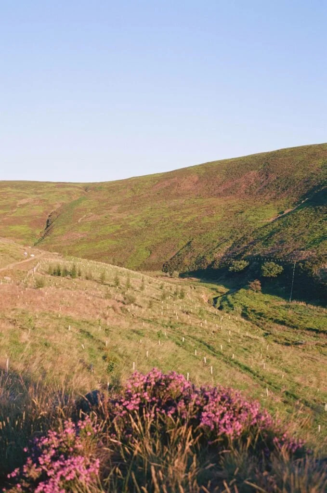
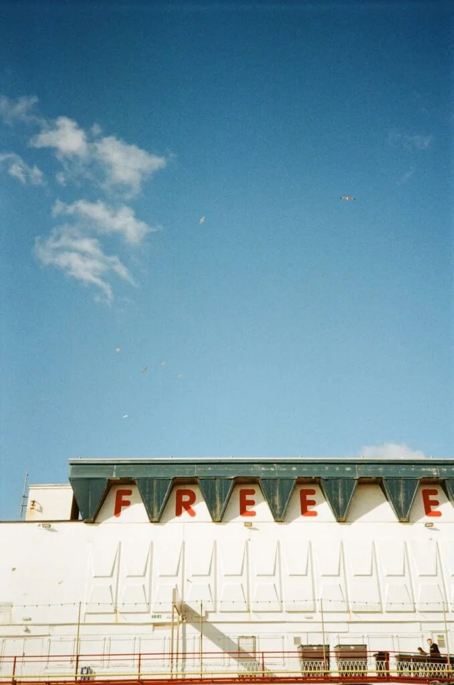
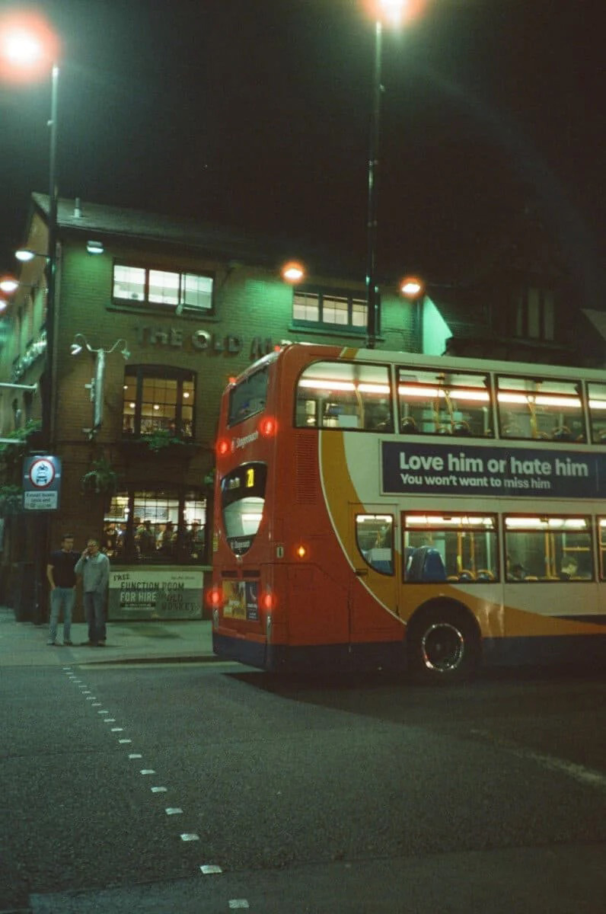

Choosing the Right Film Stock
Choosing a film stock is one of the most important creative decisions a photographer can make. Before composition, before lighting, before even pressing the shutter, the type of film loaded into the camera already shapes the final image. Some films create soft pastel tones and smooth skin, while others produce heavy grain, deep contrast, or oversaturated color. Two photographers can stand in the exact same location, photograph the exact same subject, and walk away with completely different images simply because they chose different film stocks.
In digital photography, presets and filters can imitate these looks afterward. Film works differently. The personality of the image is built directly into the negative itself. Grain, color response, contrast, sharpness, and exposure latitude are all physical characteristics of the film, which is why many photographers become deeply attached to certain stocks over time.
Let's take the time to compare and contrast some of the most popular film stocks, and explore how their unique characteristics can influence the creative process so you can choose the right one for your project.
Kodak Portra 400 — The Modern Standard
Kodak Portra 400 is often considered the benchmark for professional color film. Originally designed for portrait photography, it became popular because of its soft contrast, natural skin tones, and ability to handle difficult lighting conditions. Portra’s colors feel muted and cinematic rather than overly saturated, giving photographs a polished and timeless appearance.
What makes Portra especially loved among photographers is its exposure latitude. Even when overexposed by one or two stops, the film retains detail and produces smooth highlights rather than harsh brightness. This forgiving nature makes it ideal for documentary photography, weddings, and street photography where lighting changes constantly.
Kodak Ektar 100 — Saturation and Sharpness

If Portra is soft and subtle, Kodak Ektar 100 is its opposite. Ektar is known for intense saturation, extremely fine grain, and sharp detail. Landscapes shot on Ektar often appear vivid and almost hyperreal, with deep blues, rich greens, and strong reds.
Photographers frequently use Ektar while traveling or shooting nature because the film exaggerates color in a way that feels dramatic without becoming artificial. However, this same saturation can create unnatural skin tones, which is why portrait photographers usually avoid it.
One of Ektar’s most impressive qualities is its grain structure. Even when scanned at high resolution, images remain remarkably clean and detailed. For photographers wanting the sharpest possible color negative film, Ektar continues to be one of the strongest options available.
Kodak Gold 200 — The Everyday Film Look

Kodak Gold occupies a very different place in film culture. Unlike Portra or Ektar, Gold was never intended to be a luxury or professional stock. It was designed as an affordable consumer film, the kind people loaded into family cameras during vacations, birthdays, and everyday life.
Gold produces warm tones, visible grain, and nostalgic colors that immediately feel familiar. Highlights often glow with yellow warmth, while shadows retain softness rather than deep contrast. The imperfections are part of the experience
Cinestill 800T — Film Inspired by Cinema

Cinestill 800T has become one of the most recognizable modern film stocks because of one thing: night photography. Originally adapted from Kodak motion picture film, Cinestill is balanced for tungsten lighting, meaning it performs best under artificial light sources like neon signs, streetlights, and fluorescent interiors. The result is a distinctly cinematic look filled with glowing reds, cool blues, and dramatic halation around bright light sources.
The stock became hugely popular online because it transforms ordinary nighttime scenes into images that feel pulled from a movie frame. Rainy streets, diners, gas stations, and city lights all gain a surreal atmosphere when photographed on 800T. However, Cinestill is also unpredictable. Its strong halation and color shifts can overpower images if used carelessly. Unlike Portra, which adapts to almost any situation, Cinestill demands intentional shooting.
Part of what makes film photography so compelling is that no stock is neutral. Every film interprets the world differently. Some soften reality while others intensify it. Some preserve detail and accuracy while others embrace unpredictability and flaws. This is why photographers often become loyal to certain stocks over time. Choosing film becomes less about technical perfection and more about emotional preference. A photographer might choose Kodak Gold not because it is the sharpest film available, but because it reminds them of family photographs from childhood. Another photographer might choose Cinestill because they want city lights to bloom dramatically at night.